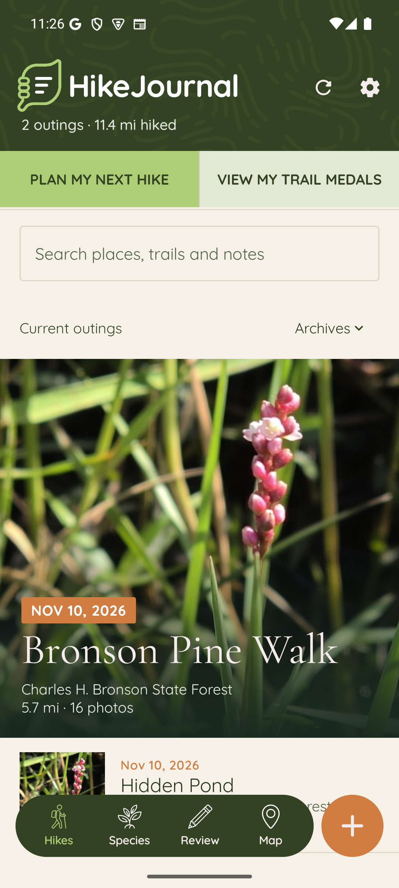
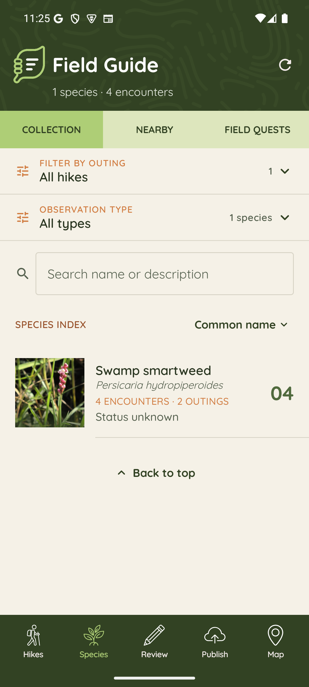

01
Photograph the day
Keep the frame, caption, and memory together in one outing instead of scattered across your camera roll.
Keep the wild close. Give every outing a place to live: its route, photographs, field notes, and the species you met along the way.
A quiet home for the details that disappear first: what you saw, where you walked, what the light was doing, and why you want to remember it.
Keep the frame, caption, and memory together in one outing instead of scattered across your camera roll.
Record a route offline and let it find its way into your journal when you are back in range.
See places, seasons, distances, and field marks build into a personal history over time.

Review the plants, animals, and signs you notice. Build a collection that belongs to the places you actually walk.

Routes and confirmed species become a living map of your wandering — private by default, ready to explore when you are.
HikeJournal is built for personal use: no ads, no public feed, no pressure to turn a walk into content.
Read the privacy policy